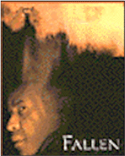

Contents | Features | Reviews | News | Archives | Store |
 |
|
| Movie Credits | Buy It! |
Fallen
Review by Carrie
Gorringe
Posted 16 January 1998
|  | Directed by Gregory Hoblit Starring
Denzel Washington, John Goodman, Screenplay by Nicholas Kazan |
Detective John Hobbes (Washington) is about to witness the murder of a notorious serial poisoner named Edgar Reece (Koteas). Hobbes is called in to hear Reece’s last words. Unrepentant to the end, Reece is insistent that Hobbes shake his hand – presumably in one of those usual acknowledgments of Hobbes’ status as a worthy opponent. Nothing in this chain of events prepares Hobbes for what transpires after Reece seizes his hand: a stream of seeming gibberish froths forth from Reece’s mouth. Shaken, Hobbes leaves for the execution room, where yet another surprise awaits him and the audience: Reece’s final act is to sing his own rendition of the Rolling Stones’ Time is On My Side just before the gas hits him (one might have thought that Sympathy for the Devil would be more appropriate, but I’m getting ahead of the film and myself). Again, although deathbed bravado is not an unusual aspect of executions, the sardonically menacing tone emanating from Reece’s mouth is enough to place anyone in a state of unease.
After the execution, Hobbes, gathered with his fellow officers, Lou (Gandolfi)and Jonesie (Goodman), declares that the police "are the chosen people" who save the world from chaos – another variation on the "thin blue line" theory. But even Hobbes is not prepared for what he has been chosen to endure. Not long after the execution, a rash of killings that match Reece’s homicidal style begin breaking out all over the city, and evidence seems to be suggesting that Hobbes is part of the conspiracy, insofar as Hobbes’ superior, Lt. Stanton (Sutherland), is concerned. Hobbes is then sufficiently intrigued to answer the riddle that Reece posed to him while in his jail cell. The answer leads Hobbes to a young theology professor named Gretta Milano (Davidtz) whose policeman father committed suicide over thirty years ago after being framed for murder under strikingly similar circumstances. After some initial prodding, she tells Hobbes that he is the victim of an evil spirit named Azazel (meaning "evil incarnate" in Aramaic). Azazel is one of the "fallen" angels, one so evil that he has been denied form. In order to survive, he and others like him must drift from human to human in a parasitical search for existence. Not surprisingly, their eventual aim is the destruction of society. Now armed with information, Hobbes goes after Azazel, but the cost will be high; Azazel will repay the favor by menacing Hobbes’ brother (Casseus) and nephew (Pagan).
There’s no question that Fallen is a bizarre Frankenstein monster of a film, since it has the feeling of having been cobbled together from various psychological flotsam and jetsam of various other films. Paste a bit of the Hitchcockian mistaken-identity motif here, attach a bit of supernatural thriller there, etc. and you have the film’s essence down pat. Despite the obviousness of Fallen’s cinematic heritage, its "bone structure" should have been good enough for the creation of a first-class thriller, but such isn’t the case. One of the key elements in this genre of filmmaking to bombard the audience with as much information about the evil specter as soon as is decently possible while concealing just enough to provide an effective wallop at the end. The entire narrative hangs upon this information, simply because an early arming of the audience causes its members to become disarmed and their imaginations to run more amok, thereby intensifying the horrific charge they obtain with every passing scene. Fallen does not follow this pattern very effectively; it allows the "knowledge-is-power" element to dissipate far too quickly after about ninety minutes (the very time during which the audience is looking for more information). The expert is not given enough opportunity to provide the necessary clues to the demon’s modus operandi, allowing them to dribble out in an ever more enervating stream. This is the Cliff’s Notes version of explication, and it weighs the narrative down. Moreover, the script has a fatal lack of timing; some of the explicatory passages, such as the reference to Revelations 18:2 (describing the use of human souls as a "home for every foul beast") are provided long after their usefulness has expired. Instead of striving for balance, director Hoblit, who seems to be developing a specialty in the area of the slam-bang ending (used to great effect in his debut, Primal Fear) bets the entire farm on the strength of the ending alone; the so-called shock that awaits the audience here is, alas, hardly much of a surprise, because the audience hasn’t been adequately primed for it. They know too much and too little at once. It’s a dangerous position for any horror film in which to find itself. Once the hand has been tipped, tedium sets in, and the film is beyond redemption. Not even wholesale appropriations from Seven’s visual style – Fallen is chock full of slow-motion, rough video images, effective only until the novelty wears off – can conceal the structural weakness underneath.
The slackness of the script obliges the actors to prop up the film at every turn and their work is, under the circumstances, can only be described as admirable, especially considering the unrelenting silliness of the dialogue they are forced to work with, courtesy of Nicholas Kazan (anyone who can keep a straight face, as does Davidtz, while uttering the line, "When it involves a person, it’s always personal", deserves any amount of praise that is immediately and not so immediately available). Washington is, as per usual, always the very model of an earnest, upstanding man pushed to the limits of decency. Goodman is also superb in his trademark slobby sidekick role, though his turn in the final scene is reminiscent of his work in the same position in Barton Fink; you venture past the aw-shucks veneer to find the rich layers of fine acting underneath. Sutherland, who seems, visually at least, to be evolving into a sinister version of Art Carney, uses his on-screen moral ambiguity to good effect; you really wonder just how involved he is in the plot. In fact, Sutherland ends up, at times being the only fulcrum on which the evil can balance itself, if for no other reason than the shady persona he has consistently projected in films as of late (particularly in George Cosmatos’ dreadful Conspiracy Theory). However, playing a waiting game with Sutherland’s character is not sufficiently entertaining in itself, given the weak ending, soul-crushing dialogue and the appalling lack of originality of the final musical motif. Let’s just say that the motif is indicative of Fallen’s overall quality: it’s no exaggeration to state that hustling the audience is just the nature of its game.
Contents | Features | Reviews | News | Archives | Store
Copyright © 1999 by Nitrate Productions, Inc. All Rights Reserved.